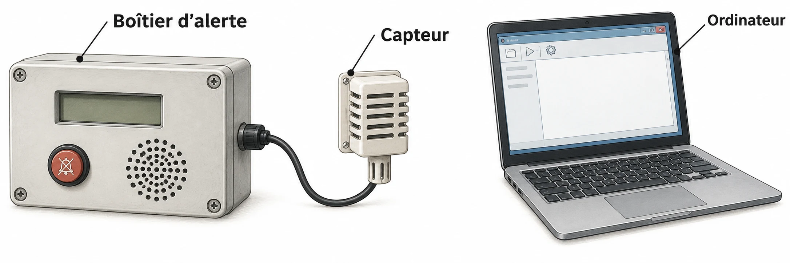

OBSERVER · EXPÉRIMENTER · EXPLIQUER
Une alerte fiable
Explore le comportement d’une alerte, en séparant voyant et son.

✎ Garde ta feuille à côté de toi.Ordinateur : manipulations et mesures simulées. Papier : relevés, réponses, calculs et croquis. Matériel réel : essai complémentaire si disponible.
À toi de construire le programme
Crée les variables température, durée de porte, muet, maintenance, alerte et son. Représente d’abord le défaut de la fiche, puis modifie la décision. Ajoute la liste de températures et le compteur demandé.
Utilise Scratch installé sur le poste, ou la version en ligne indiquée par le professeur. Aucun compte personnel nécessaire pour travailler sans partage.
Des observations pour expliquer
- Q2–Q4 : prévois puis observe les cas limites.
- Q5–Q8 : écris tes algorithmes et essais ; programme les modifications dans Scratch.
Appuie ton explication sur une valeur, un changement observé ou une comparaison. Distingue ce que montre le modèle et ce qui reste à vérifier.